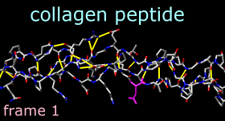
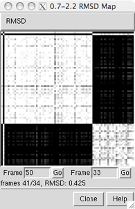
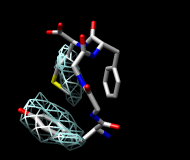
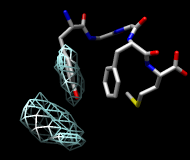
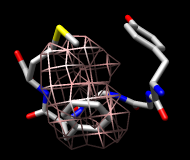
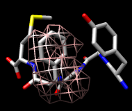

This tutorial focuses on visualization and analysis of molecular dynamics (MD) trajectories and other structural ensembles with the MD Movie tool. Part 1 uses an MD trajectory of a collagen peptide, and Part 2 uses an NMR ensemble of Met-enkephalin.
|  |
We will view an MD trajectory of the nonmutant collagen peptide described in:
Severity of osteogenesis imperfecta and structure of a collagen-like peptide modeling a lethal mutation site. Radmer RJ, Klein TE. Biochemistry. 2004 May 11;43(18):5314-23.(Thanks to the authors for providing the data!) To follow along, download the data files:
unix: chimeraA basic Chimera window should appear after a few seconds.
Show the Command Line (Tools... General Controls... Command Line) and start MD Movie (Tools... MD/Ensemble Analysis... MD Movie). In the resulting dialog, the inputs can be specified in two different ways:
amber leap.top md01.crd
Apply interactive preset #2 to display all atoms with heteroatom color-coding:
Command: preset apply int 2Undisplay hydrogens, change to the stick representation, and show the backbone as ribbons:
Command: ~disp HMove and scale the structure as desired throughout the tutorial. The structure contains three chains. Each chain is in a left-handed polyproline II helix conformation, and together the chains form the right-handed triple helix characteristic of fibrillar collagen. The ribbons are narrow because the peptides are not in a standard alpha-helical conformation.
Command: repr stick
Command: ribbon
|
MD Movie controller buttons |
|---|
Show the amino acid sequence with Tools... Sequence... Sequence (pick any one of the three chains). Fibrillar collagen typically contains many -Gly-X-Y- repeats, where X is often Pro (proline) and Y is often Hyp (hydroxyproline). Both Pro and Hyp are shown as P in the sequence panel. Selecting residues highlights both the sequences and the structures:
Command: sel :glyQuit from the sequence panel.
Command: sel :pro
Command: sel :hyp
It may be useful to hold certain atoms steady during trajectory playback. For example, hold Glu-86 steady to view its interactions:
Command: sel :86Even though it is no longer selected, residue 86 will be held steady during playback (as possible; there will still be internal motions) until Hold selection steady with a different selection or Stop holding steady is used. The structure can still be moved with the mouse, however. Try playing the trajectory with residue 86 held steady and then without holding any atoms steady (from the controller menu, choose Actions... Stop holding steady).
(from the controller menu) Actions... Hold selection steady
Command: color magenta sel
Command: ~sel
We will create a short movie of several frames in the trajectory. The following procedure is just one example; there are many possibilities of what to show, how to show it, whether to use a script, and so on.
Adjust the Chimera window to the dimensions desired for the movie. If needed, use the Side View (Tools... Viewing Controls... Side View) to adjust the clipping planes. Turn off the ribbon to reveal the backbone atoms:
Command: ~ribbonUse 2D Labels (Tools... Utilities... 2D Labels) to add a title. When Use mouse for label placement is checked, the left mouse button (button 1) is reassigned to labeling: clicking starts a new 2D label and previously created 2D labels can be repositioned by dragging. Click in the Chimera window where you would like to start a title and type in the title text; drag the text if you want to reposition it. Adjust the Font size and Color (click the color well, use the Color Editor) to your liking. Unchecking Use mouse for label placement returns the left mouse button to its previous function (by default, rotation).
Create another 2D label, this time using the 2dlabels command so that the label will have a name:
Command: 2dlabels create mylabel text tempThis label will be used to display the frame number. In the 2D Labels dialog, make sure that Use mouse for label placement is checked, then drag the temporary text to near the lower left corner of the Chimera window. Adjust its Font size and Color to your liking, then Close the 2D Labels dialog.
Next, define a script to execute at each frame. Halt any playback. From the MD Movie controller menu, choose Per-Frame... Define script. Enter a script to be interpreted as Chimera commands:
findhbond linewidth 2 color yellowUncheck the option to Use leading zeroes... This script will calculate the hydrogen bonds in each frame, show them as yellow lines, and display the current frame number in the label named mylabel. Click OK to dismiss the dialog with the script. Play a few steps by clicking the button to go forward or backward one step at a time. The number and arrangement of H-bonds vary somewhat from step to step. (Although the number of H-bonds cannot be accessed in Chimera commands, a Python script could be used to display this information. For example, hbcount.py would show the H-bond count instead of the frame number in mylabel.)
2dlabels change mylabel text "frame <FRAME>"
Halt any playback, but move the Playback speed slider all the way to the right. From the controller menu, choose File... Record movie. If a dialog with an MPEG license agreement appears, click Accept since the movie will not be used for commercial purposes. In the dialog for recording,
Click Quit on the controller to close the trajectory and exit from MD Movie. An easy way to delete all of the 2D labels is with File... Close Session. Go on to Part 2 below, OR terminate the Chimera session:
Command: stop
We will view an NMR ensemble of Met-enkephalin in negatively charged bicelles, as described in:
A multidimensional 1H NMR investigation of the conformation of methionine-enkephalin in fast-tumbling bicelles. Marcotte I, Separovic F, Auger M, Gagné SM. Biophys J. 2004 Mar;86(3):1587-600.To follow along, download the data file 1plx.pdb.
With Chimera started and the Command Line shown (as in Part 1), choose Tools... MD/Ensemble Analysis... MD Movie. In the resulting dialog, choose PDB as the Trajectory format and indicate that the frames are contained in a single file. Browse to the file 1plx.pdb, set the input location, and then click OK.
The first set of coordinates will be displayed and the MD Movie controller will appear. If the controller becomes obscured by other windows, it can be raised using its instance in the Tools menu (near the bottom of the menu, below the horizontal line).
Use a preset to show the structure as sticks color-coded by heteroatom:
Command: preset apply int 1(The structure may have been shown that way already, depending on your preference settings.) Move and scale the structure as desired throughout the tutorial.
This structure is Met-enkephalin, with the sequence Tyr-Gly-Gly-Phe-Met. Enkephalins are neuropeptides that activate opioid receptors. Different subtypes of opioid receptors mediate different but overlapping responses in the body. For example, molecules that selectively activate μ-opioid receptors are more effective for treating severe pain than molecules that selectively activate δ-opioid receptors, but are also more likely to cause constipation. The conformations of molecules that bind opioid receptors (enkephalins, morphine, etc.) are of interest because they influence the selectivity of receptor binding and thus the physiological response.
Use the MD Movie controller to flip through the different conformations, as described above. The frames do not reflect time ordering, as this is an NMR ensemble rather than a trajectory. If desired, simplify the view by undisplaying hydrogens:
Command: ~disp H
It is thought (see the reference and papers cited therein) that a conformation of enkephalin in which the Tyr and Phe rings point in different directions (like frames 1 and 25) binds to μ-opioid receptors and a conformation in which they point toward each other (like frames 2 and 80) binds to δ-opioid receptors.
|  |
In the RMSD map, the axes are frame numbers; lighter squares reflect pairs of frames with lower RMSDs (more similar structures) and darker squares reflect pairs of frames with higher RMSDs (less similar structures). Mousing over the map shows the RMSD values and the numbers of the frames being compared. Clicking on the map enters the corresponding pair of Frame numbers below the map. Clicking Go then displays that frame in the main Chimera window.
Roughly, the upper left block of white in the map represents conformations more similar to to a μ-binding conformation, and the lower right block of white represents conformations more similar to a δ-binding conformation. Similar conformations are mostly grouped together in this ensemble, but will not necessarily be grouped together in ensembles in general. Also, ensembles usually contain many more groups of conformations, especially for larger structures with more degrees of freedom.
All atoms were used in the RMSD calculation, because although the parameter Restrict map to current selection, if any was set to true, nothing was selected. Select the nonhydrogen backbone atoms only,
Command: sel @n,ca,c,oand this time click OK to dismiss the RMSD parameters dialog and perform the calculation. Although the two maps span different ranges in RMSD, they reveal essentially the same groups of conformations. Close both maps.
Another way to analyze the ensemble is to calculate spatial occupancy maps for atoms of interest. From the controller menu, choose Analysis... Calculate occupancy. The resulting dialog will show the warning message "No atoms being held steady." This means you have not previously selected a set of atoms and chosen Actions... Hold selection steady from the controller menu for this ensemble.
Why might it be useful to hold atoms steady while calculating occupancy? The contents of different frames may move around enough to obscure certain spatial patterns. Even if the structure as a whole is held fairly steady, one may want to hold a particular set of atoms (such as a sidechain) steady to examine local interactions. However, if the structure or region of interest is already sufficiently steady, the "hold steady" step can be omitted.
One approach to analyzing the relative positions of the aromatic rings is to hold the Phe ring atoms steady and map the occupancy of the Tyr ring atoms:
Command: sel :phe & aromatic ring
Command: sel :tyr & aromatic ring
| frame 1 (μ-type) | frame 2 (δ-type) |
|---|---|
|  |  |
|  |  |
Clear the selection in Chimera (Select... Clear Selection). In the Volume Viewer tool, change from surface to mesh and move the slider to a value of approximately 2. If necessary, use the Side View (Tools... Viewing Controls... Side View) to move the clipping planes so that all of the mesh is visible. Optionally, change the color of the mesh surface by clicking the color well below the histogram and using the Color Editor. (See the Volume Viewer documentation for details on its many features.)
You will see two main blobs or volumes representing probable positions of the Tyr ring relative to the Phe ring (similar to the upper images). The larger volume represents μ-type conformations and the smaller represents δ-type conformations.
If desired, flip through the ensemble (still holding the Phe ring steady) to verify that the volumes show areas occupied by the Tyr ring. To delete the volume display, choose File... Close map from the Volume Viewer menu.
Finally, calculate a map without holding any atoms steady. Choose Actions... Stop holding steady from the controller menu. Since this ensemble maintains the Tyr ring in roughly the same place, simply map the occupancy of the Phe ring atoms. Select the Phe ring atoms (as above), choose Analysis... Calculate occupancy, and click OK. This time, the conformations are not as well separated; two lobes of occupancy are apparent at a contour level of approximately 2 (similar to the lower images). One lobe represents μ-type conformations and the other represents δ-type conformations.
When finished with the Met-enkephalin ensemble, quit from Chimera (File... Quit).